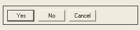
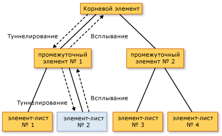

Общие сведения о перенаправленных событиях
В этом разделе описывается понятие перенаправленных событий в Windows Presentation Foundation (WPF). Здесь определяется терминология перенаправленных событий, описывается, как перенаправленные события маршрутизируются через дерево элементов, кратко описываются способы обработки перенаправленных событий, а также способы создания пользовательских перенаправленных событий.
Предварительные требования
Этот раздел предполагает наличие базовых знаний о среда CLR и объектно-ориентированном программировании,а также представление о связях между элементами WPF в виде дерева. Чтобы выполнить примеры в этом разделе, следует также понимать Язык XAML и знать, как писать простые приложения или страницы WPF. Дополнительные сведения см. в разделе Пошаговое руководство: Создание первого классического приложения WPF и Обзор XAML (WPF).
Что такое перенаправленное событие?
Перенаправленные события можно рассматривать с точки зрения функциональности или реализации. Здесь приводятся оба определения, чтобы пользователи могли выбрать наиболее подходящее для себя.
Функциональное определение: Перенаправленное событие — это тип события, которое может вызывать обработчики нескольких слушателей в дереве элементов, а не только объект, который вызвал событие.
Определение реализации: Перенаправленное событие — CLR событий, поддерживаемый экземпляр RoutedEvent класса и обрабатывается Windows Presentation Foundation (WPF) системой событий.
Обычно в приложении WPF содержится много элементов. В зависимости от того, созданы элементы в коде или объявлены в XAML, они связаны в дереве элементов друг с другом. Маршрут события может проходить в одном из двух направлений в зависимости от определения события, но обычно маршрут проходит от исходного элемента и затем "всплывает" вверх по дереву элементов до тех пор, пока не достигнет корневого элемента дерева (как правило, страница или окно). Концепция всплывания может быть знакома, если имеется опыт работы с моделью DHTML-объектов.
Рассмотрим следующее простое дерево элементов.
<Border Height="50" Width="300" BorderBrush="Gray" BorderThickness="1">
<StackPanel Background="LightGray" Orientation="Horizontal" Button.Click="CommonClickHandler">
<Button Name="YesButton" Width="Auto" >Yes</Button>
<Button Name="NoButton" Width="Auto" >No</Button>
<Button Name="CancelButton" Width="Auto" >Cancel</Button>
</StackPanel>
</Border>
Это дерево элементов выглядит примерно следующим образом.

В этом упрощенном дереве элементов источником Click событий является одним из Button элементов и какое Button была нажата — первый элемент, который имеет возможность обработать событие. Но если обработчик не присоединен к Button действует на событие, а затем будет всплывать вверх до Button родительского элемента в дереве элементов, который является StackPanel. Потенциально событие может передаваться к Border, а затем за пределы границы к корневой странице дерева элементов (не показано).
Другими словами, маршрутом события для данного Click событие:
Button-->StackPanel-->Border-->...
Сценарии верхнего уровня для перенаправленных событий
Ниже приведен краткий обзор сценариев, определяющих концепцию перенаправления событий и то, почему обычного события CLR не было достаточно для осуществления этих сценариев.
Составление элемента управления и инкапсуляция. Различные элементы управления в WPF имеют расширенную модель содержимого. Например, можно поместить изображение внутри Button, что эффективно расширит визуальное дерево кнопки. Тем не менее добавленное изображение не должно отключать проверку нажатия, которая позволяет кнопке реагировать на Click ее содержимого, даже если пользователь нажимает пиксели, которые технически являются частью изображения.
Точки присоединения обработчика: В Windows Forms, придется присоединить один обработчик несколько раз для обработки событий, которые могут возникнуть из нескольких элементов. Перенаправленные события позволяют присоединить обработчик только один раз, как было показано в предыдущем примере, и при необходимости использовать логику обработки для определения места возникновения события. Например, это может быть обработчиком для ранее показанного XAML.
private void CommonClickHandler(object sender, RoutedEventArgs e)
{
FrameworkElement feSource = e.Source as FrameworkElement;
switch (feSource.Name)
{
case "YesButton":
// do something here ...
break;
case "NoButton":
// do something ...
break;
case "CancelButton":
// do something ...
break;
}
e.Handled=true;
}
Warning
It looks like the sample you are looking for does not exist.
Обработка классов: Перенаправленные события разрешают использовать статический обработчик, который определен в классе. Этот обработчик классов может обрабатывать событие раньше любого вложенного обработчика экземпляров.
Ссылка на событие без отражения: Определенных методов кода и исправлений требуется Идентификация определенного события. Перенаправленное событие создает RoutedEvent поле идентификатора, который обеспечивает надежный метод идентификации события, не требует статического отражения или выполнения отражения.
Реализация перенаправленных событий
Перенаправленное событие — CLR событий, поддерживаемый экземпляр RoutedEvent класса и зарегистрирована WPF системой событий. RoutedEvent Экземпляр, полученный из регистрации обычно сохраняется в качестве public static readonly члена класса, который регистрирует и таким образом «владеет» перенаправленным поля. Соединение с событием CLR с таким же именем (которое иногда называется событием программы-оболочки) выполняется путем переопределения реализаций add и remove для события CLR. Как правило, add и remove остаются неявными по умолчанию и используют соответствующий синтаксис события определенного языка для добавления и удаления обработчиков события. Механизм подключения и резервирования перенаправленного события похож как свойство зависимостей является CLR свойство, поддерживаемый DependencyProperty класса и зарегистрирована WPF системы свойств.
В следующем примере показано объявление пользовательского Tap перенаправленного события, включая регистрацию и использование RoutedEvent поле идентификатора и add и remove реализации для Tap CLR событий.
public static readonly RoutedEvent TapEvent = EventManager.RegisterRoutedEvent(
"Tap", RoutingStrategy.Bubble, typeof(RoutedEventHandler), typeof(MyButtonSimple));
// Provide CLR accessors for the event
public event RoutedEventHandler Tap
{
add { AddHandler(TapEvent, value); }
remove { RemoveHandler(TapEvent, value); }
}
Warning
It looks like the sample you are looking for does not exist.
Обработчики перенаправленных событий и XAML
Чтобы добавить обработчик для события с помощью XAML, следует объявить имя события как атрибут для элемента, который является прослушивателем событий. Значением атрибута является имя метода реализуемого обработчика, который должен существовать в разделяемом классе файла кода программной части.
<Button Click="b1SetColor">button</Button>
Синтаксис языка XAML для добавления стандартных обработчиков событий CLR одинаков для добавления обработчиков перенаправленных событий, так как на самом деле обработчики добавляются к программе-оболочке события CLR, которая содержит реализацию перенаправленного события. Дополнительные сведения о добавлении обработчиков событий в XAML см. в разделе Общие сведения о языке XAML (WPF).
Стратегии маршрутизации
Перенаправленные события используют одну из трех стратегий маршрутизации.
Восходящая маршрутизация: Вызываются обработчики событий в источник событий. Перенаправленное событие затем следует к родительским элементам до достижения корневого элемента дерева. Большинство перенаправленных событий используют стратегию восходящей маршрутизации. События восходящей маршрутизации обычно используются для получения отчета об изменении входных данных или состояния от различных элементов управления или других элементов пользовательского интерфейса.
Direct: Только элемент-источник события имеет возможность вызывать обработчики в ответ. Это является аналогом "маршрутизации", которая используется Windows Forms для события. Тем не менее, в отличие от стандартного CLR событий, прямые перенаправленные события поддерживают обработку классов (обработка классов объясняется в следующем разделе) и может использоваться EventSetter и EventTrigger.
Туннелирование: Изначально вызываются обработчики событий в корневого элемента дерева. Перенаправленное событие затем передается по маршруту через последовательные дочерние элементы к узловому элементу, который является источником перенаправленного события (элементом, вызвавшим перенаправленное событие). Нисходящая маршрутизация событий часто используется или обрабатывается как часть композиции для элемента управления таким образом, что события из составных частей композиции могут намеренно подавляться или заменяться событиями, которые определены для полного контроля. Входные события, которые содержатся в WPF, часто реализуются в виде пары нисходящей и восходящей маршрутизации. События нисходящей маршрутизации также иногда называют событиями предварительного просмотра по причине используемого для пар соглашения об именах.
Зачем использовать перенаправленные события?
Разработчикам приложений не всегда необходимо знать, реализуется ли обрабатываемое событие как перенаправленное. Перенаправленные события имеют особое поведение, но такое событие остается невидимым, если обрабатывается в элементе, где оно возникает.
Перенаправленные события являются мощным инструментом при использовании их в одном из предлагаемых сценариев: при определении общих обработчиков для общего корня, при композиции собственного элемента управления или при определении собственного класса пользовательского элемента управления.
Прослушиватели перенаправленных событий и источники перенаправленных событий не требуются для совместного использования общего события в их иерархии. Любой UIElement или ContentElement может быть прослушивателем перенаправленных событий. Таким образом, можно использовать полный набор перенаправленных событий, доступных во всем рабочем API как концептуальный "интерфейс", посредством чего разнородные элементы в приложении могут обмениваться данными о событиях. Эта концепция "интерфейса" для перенаправленных событий особенно применима для событий ввода.
Перенаправленные события могут также использоваться для связи элементов дерева, так как данные событий сохраняются для каждого элемента в маршруте. Один элемент может изменить что-либо в данных события, и это изменение будет доступно для следующего элемента в маршруте.
Помимо маршрутизации, существуют еще две причины реализации события WPF в качестве перенаправленного события вместо стандартного события CLR. При реализации собственных событий рекомендуется учитывать приведенные далее принципы.
Определенные WPF Стилизация и использование шаблонов функции, такие как EventSetter и EventTrigger требуется указанное событие было перенаправленным. Это сценарий идентификатора события, упомянутого выше.
Перенаправленные события поддерживают механизм обработки классов, в силу чего класс может указывать статические методы, имеющие возможность обрабатывать перенаправленные события до того, как любой зарегистрированный обработчик экземпляров сможет получить к ним доступ. Это очень полезно при разработке элемента управления, поскольку класс может управляться с помощью событий, что не может быть случайно подавлено обработкой события в экземпляре.
Каждое из описанных выше рассуждений рассматривается в отдельной части этого раздела.
Добавление и реализация обработчика событий для перенаправленного события
Чтобы добавить обработчик событий в XAML, просто добавьте имя события в элемент как атрибут и установите значение атрибута в качестве имени обработчика событий, который реализует соответствующий делегат, как показано в следующем примере.
<Button Click="b1SetColor">button</Button>
b1SetColor — имя реализуемого обработчика, который содержит код, который обрабатывает Click событий. b1SetColor должен иметь ту же сигнатуру, что RoutedEventHandler делегат, который является делегатом обработчика событий для Click событий. Первый параметр всех делегатов обработчиков перенаправленных событий указывает элемент, к которому добавляется обработчик событий, а второй параметр указывает данные для события.
void b1SetColor(object sender, RoutedEventArgs args)
{
//logic to handle the Click event
}
Warning
It looks like the sample you are looking for does not exist.
RoutedEventHandler является делегатом обработчика перенаправленных событий basic. Для перенаправленных событий, которые являются специализированными для определенных элементов управления или скриптов, делегаты, которые используются для обработчиков перенаправленных событий, также могут быть более специализированными, чтобы они могли передавать определенные данные события. Например, в общем сценарии ввода можно обработать DragEnter перенаправленного события. Обработчик должен реализовывать DragEventHandler делегировать. С помощью наиболее конкретного делегата, можно обработать DragEventArgs в обработчике событий и прочитать Data свойство, которое содержит полезные данные буфера обмена операции перетаскивания.
Полный пример добавления обработчика событий к элементу с помощью XAML см. в разделе Обработка перенаправленных событий.
Добавить обработчик для перенаправленного события в приложении, созданном в коде, достаточно просто. Обработчики перенаправленных событий всегда можно добавлять с помощью вспомогательного метода AddHandler (который является тот же метод, который вызывает резервной копией для add.) Однако существующие перенаправленные события WPF обычно имеют резервную реализацию add и логику remove, позволяющую добавлять обработчики перенаправленных событий с помощью синтаксиса событий для определенного языка, являющегося более понятным, чем вспомогательный метод. Ниже приведен пример использования вспомогательного метода.
void MakeButton()
{
Button b2 = new Button();
b2.AddHandler(Button.ClickEvent, new RoutedEventHandler(Onb2Click));
}
void Onb2Click(object sender, RoutedEventArgs e)
{
//logic to handle the Click event
}
Warning
It looks like the sample you are looking for does not exist.
В следующем примере показан C# синтаксис оператора (Visual Basic имеет немного другой синтаксис оператора из-за обработки разыменовывания):
void MakeButton2()
{
Button b2 = new Button();
b2.Click += new RoutedEventHandler(Onb2Click2);
}
void Onb2Click2(object sender, RoutedEventArgs e)
{
//logic to handle the Click event
}
Warning
It looks like the sample you are looking for does not exist.
Пример добавления обработчика событий в коде см. в разделе Добавление обработчика событий с помощью кода.
Если вы используете Visual Basic, можно также использовать Handles ключевое слово, чтобы добавить обработчик как часть объявлений обработчика. Дополнительные сведения см. в разделе Обработка событий в Visual Basic и WPF.
Концепция обработанных событий
Все перенаправленные события совместно используют общий базовый класс данных события, RoutedEventArgs. RoutedEventArgs Определяет Handled свойство, которое принимает логическое значение. Цель Handled свойство является включение любой обработчик событий в маршруте мог отметить перенаправленное событие как обрабатываются, его значение Handled для true. После обработки обработчиком в одном элементе в маршруте совместно используемые данные события снова предоставляются каждому прослушивателю в маршруте.
Значение Handled влияет на перенаправленное событие сообщил или обрабатываются во время их передачи дальнейшего в маршруте. Если Handled является true событий данные для перенаправленного события, а затем обработчики, которые прослушивают перенаправляемые события на другие элементы, обычно больше не вызываются для этого конкретного экземпляра события. Это справедливо как для обработчиков, присоединенных к XAML, так и для обработчиков, добавленных с помощью синтаксиса присоединения обработчика событий конкретного языка, например += или Handles. Для наиболее общих сценариев обработки Пометка события как обработанного путем присвоения Handled для true будет «stop» нисходящую или восходящую маршрутизацию событий, а также для любого события, которое обрабатывается в точке маршрута обработчиком классов маршрутизацию.
Тем не менее, отсутствует «handledEventsToo» механизм, посредством которого прослушиватели могут по-прежнему запускать обработчики в ответ на перенаправляемые события где Handled является true в данных события. Другими словами, маршрут события в действительности не останавливается при пометке события в данных события как обработанного. Механизм handledEventsToo можно использовать только в коде или в EventSetter:
В коде, вместо того чтобы использовать синтаксис события определенного языка, который работает для общих CLR события, вызывать WPF метод AddHandler(RoutedEvent, Delegate, Boolean) для добавления обработчика. Задайте для
handledEventsTooзначениеtrue.В EventSetter, задайте HandledEventsToo атрибут, который будет
true.
Помимо поведения, Handled создает состояние в маршрутизированных событиях, концепция Handled влияет на том, как должны разрабатываться приложение и написать код обработчика событий. Можно представить Handled как простой протокол, предоставляемый перенаправленными событиями. Способы использования этого протокола является, однако концептуальное проектирование как значение Handled предназначен для использования выглядит следующим образом:
Если перенаправленное событие помечено как обработанное, то затем его не требуется снова обрабатывать другими элементами в маршруте.
Если перенаправленное событие не помечено как обработанное, то либо не регистрировал обработчик или обработчики, которые были зарегистрированных разрешили использовать данные события и установили отказались другой прослушиватель, более ранний в маршруте Handled для
true. (Или, возможно, текущий прослушиватель является первой точкой в маршруте.) Обработчики на текущем прослушивателе имеют три возможных варианта действий.Не выполнять никаких действий. Событие остается необработанным и переходит к следующему прослушивателю.
Выполнить код в ответ на событие, при этом убедиться, что выполненное действие не было достаточно существенным, чтобы пометить событие как обработанное. Событие перенаправляется к следующему прослушивателю.
Выполнить кода в ответ на событие. Пометить событие как обработанное в данных события, передаваемых обработчику, потому что предпринятое действие считается достаточно существенным, чтобы пометить событие как обработанное. Событие перенаправляется к следующему прослушивателю, но с Handled =
trueв его данных события, поэтому толькоhandledEventsTooпрослушиватели имеют возможность вызвать следующие обработчики.
Этот концептуальный проект подкреплен описанным ранее поведением при маршрутизации: более сложным (хотя и возможным для кода и стилей) является присоединение обработчиков для перенаправленных событий, которые вызываются, даже если предыдущий обработчик маршрута уже установил Handledдля true.
Дополнительные сведения о Handled, обработка класса перенаправленных событий и рекомендации о том, когда необходимо помечать перенаправленное событие как Handled, см. в разделе маркировка перенаправленных событий как обработанных и обработка классов.
В приложениях весьма распространена обработка только перенаправляемого по восходящей события в объекте, который вызывал его, независимо от характеристик маршрутизации события. Однако все же рекомендуется помечать перенаправленное событие как обработанное в данных события, чтобы избежать непредвиденных побочных эффектов на случай, если элемент, который далее следует в дереве элементов, имеет вложенный обработчик для этого же перенаправленного события.
Обработчики классов
При определении класса, производного каким-либо образом из DependencyObject, можно также определить и присоединить обработчик класса для перенаправленного события, который является объявленным или унаследованным элементом события класса. Обработчики классов вызываются ранее любого обработчика прослушивателей экземпляров, присоединенного к экземпляру этого класса, всякий раз, когда перенаправленное событие встречает экземпляр элемента в своем маршруте.
Некоторые элементы управления WPF имеют внутреннюю обработку классов для некоторых перенаправленных событий. Может показаться, что перенаправленное событие не возникает никогда, но на самом деле оно обрабатывается классом и перенаправленное событие по-прежнему может потенциально обрабатываться с помощью обработчиков экземпляров при использовании определенных методов. Кроме того, многие базовые классы и элементы управления предоставляют виртуальные методы, которые могут быть использованы для переопределения поведения при обработке классов. Дополнительные сведения о том, как обрабатывать нежелательные классы и как определить обработку собственного класса в пользовательском классе, см. в разделе Маркировка перенаправленных событий как обработанных и обработка классов.
Вложенные события в WPF
XAML также определяет специальный тип события, называемого вложенным событием. Вложенное событие позволяет добавлять обработчик для конкретного события в произвольный элемент. Элементу, обрабатывающему событие, не требуется определять или наследовать вложенное событие, и ни объект, который потенциально может вызвать событие, ни экземпляр обработки места назначения не должны определять или каким-либо иным способом владеть этим событием в качестве элемента класса.
Система ввода WPF широко использует вложенные события. Однако практически все эти вложенные события перенаправляются через базовые элементы. События ввода затем отображаются как эквивалент невложенных перенаправленных событий, которые являются членами класса базового элемента. К примеру, присоединенное событие основной Mouse.MouseDown может намного легче обрабатываться на любой заданной UIElement с помощью MouseDown об этом UIElement вместо работы с синтаксисом присоединенных событий, либо в XAML или кода.
Дополнительные сведения о вложенных событиях в WPF см. в разделе Общие сведения о вложенных событиях.
Полные имена событий в XAML
Другой синтаксис напоминает синаксис typename. EventName вложенного события, но он не является синтаксисом вложенного события при присоединении обработчиков для перенаправленных событий, вызываемых дочерними элементами. Обработчики присоединяются в общем родительском элементе, чтобы воспользоваться преимуществами маршрутизации событий, несмотря на то что общий родительский элемент может не иметь соответствующего перенаправленного события в качестве члена. Рассмотрим этот пример еще раз.
<Border Height="50" Width="300" BorderBrush="Gray" BorderThickness="1">
<StackPanel Background="LightGray" Orientation="Horizontal" Button.Click="CommonClickHandler">
<Button Name="YesButton" Width="Auto" >Yes</Button>
<Button Name="NoButton" Width="Auto" >No</Button>
<Button Name="CancelButton" Width="Auto" >Cancel</Button>
</StackPanel>
</Border>
Здесь является прослушивателем родительского элемента, где добавляется обработчик StackPanel. Тем не менее, она добавляет обработчик для перенаправленного события, который был объявлен и будет вызываться Button класс (ButtonBase на самом деле, но доступен для Button через наследование). Button «владеет» событием, но система перенаправленных событий позволяет обработчикам любого перенаправленного события быть присоединенными к любому UIElement или ContentElement прослушиватель экземпляра, в противном случае может присоединить прослушиватели для среда CLR событий. Пространством имен xmlns по умолчанию для этих полных имен атрибутов событий обычно является пространство имен xmlns WPF по умолчанию, но можно также указать префиксные пространства имен для пользовательских перенаправленных событий. Дополнительные сведения о xmlns см. в разделе Пространства имен XAML и сопоставление пространств имен для WPF XAML.
События ввода WPF
Перенаправленные события в платформе WPF часто применяются для событий ввода. В WPF имена перенаправляемых по нисходящей событий по соглашению указываются с префиксом Preview. События ввода часто возникают попарно, одно маршрутизируется по восходящей, другое — по нисходящей. Например KeyDown событий и PreviewKeyDown событий имеют одинаковую сигнатуру, при этом первое является событием восходящей маршрутизации ввода, а второе — по нисходящей событий ввода. Иногда события ввода имеют только восходящую или, возможно, только прямую маршрутизацию. В документации в разделах, посвященных перенаправленным событиям, содержатся перекрестные ссылки на аналогичные перенаправленные события с альтернативной стратегией маршрутизации, если такие перенаправленные события существуют, и ссылки на разделы документации для уточнения стратегии маршрутизации каждого перенаправленного события.
WPF входные события, возникающие попарно, реализуются так, что одно действие пользователя из входных данных, таких как нажатие кнопки мыши, последовательно вызовет оба перенаправленные события пары. Сначала вызывается событие, которое маршрутизируется по нисходящей. Затем вызывается событие, которое маршрутизируется по восходящей. Два события буквально совместно используют тот же экземпляр данных события, так как RaiseEvent вызов метода в реализующем классе восходящей маршрутизации событие, которое ожидает передачи данных для данных события, события и повторно использует его для новых вызываемых событий. Прослушиватели с обработчиками для события, маршрутизирующегося по нисходящей, могут первыми пометить перенаправленное событие как обработанное (сначала обработчики классов, затем обработчики экземпляров). Если элемент при нисходящей маршрутизации отметил перенаправленное событие как обработанное, уже обработанные данные события отправляются для события, маршрутизирующегося по восходящей, и типичные обработчики, вложенные для эквивалентных маршрутизируемых по восходящей событий, не будут вызываться. Внешне это будет выглядеть так, как будто обработанное маршрутизируемое по восходящей событие и не вызывалось. Поведение при обработке полезно использовать при композиции элементов управления, где требуется, чтобы конечный элемент управления (а не его составные части) создавал отчеты о событиях проверки нажатия при вводе или событиях ввода на основе фокуса. Конечный элемент управления находится ближе к корневому элементу в композиции и поэтому имеет возможность обработать событие, передаваемое по нисходящей, первым и, возможно, "заменить" это перенаправленное событие более подходящим для данного элемента управления как часть кода, которая резервирует класс элемента управления.
В качестве иллюстрации того, как обрабатываются события ввода, рассмотрим следующий пример. На следующем рисунке дерева leaf element #2 является источником событий PreviewMouseDown и MouseDown.

Восходящая и нисходящая маршрутизация событий ввода
Порядок обработки событий выглядит следующим образом.
PreviewMouseDown(нисходящее) на корневом элементе.PreviewMouseDown(нисходящее) на промежуточном элементе #1.PreviewMouseDown(нисходящее) на исходном элементе #2.MouseDown(всплывающее) на исходном элементе #2.MouseDown(всплывающее) на промежуточном элементе #1.MouseDown(всплывающее) на корневом элементе.
Делегат обработчика перенаправленных событий содержит ссылки на два объекта: объект, который вызвал событие, и объект, в котором был вызван обработчик. Объект, в котором был вызван обработчик, указывается с помощью параметра sender. Объект, где было вызвано событие сообщает Source свойство в данных события. Перенаправленное событие может по-прежнему возникает и обрабатывается один и тот же объект, в этом случае sender и Source идентичны (это происходит на этапах 3 и 4, в примере обработки).
Из-за нисходящей и восходящей маршрутизации родительские элементы получают события ввода, где Source является одним из их дочерних элементов. При очень важно знать, что такое исходного элемента, можно определить исходный элемент, обратившись к Source свойство.
Как правило когда событие ввода помечено Handled, дополнительные обработчики не вызываются. Обычно события ввода помечаются как обработанные сразу же после вызова обработчика, который при обработке события ввода опирается на логику приложения.
Исключением из общего правила о Handled обработчики событий, зарегистрированные для намеренного игнорирования ввода находится в состоянии Handled состояние данных событий будет по-прежнему вызываться в маршруте. Дополнительные сведения см. в разделах События предварительного просмотра или Маркировка перенаправленных событий как обработанных и обработка классов.
Модель общего использования данных события при нисходящей и восходящей маршрутизации и последовательный вызов сначала нисходящих, а потом всплывающих событий не обязательно выполняются для всех перенаправленных событий. Такое поведение реализуется в зависимости от того, как устройства ввода WPF вызывают или соединяют пары событий ввода. Дополнительным сценарием является реализация собственных событий ввода, но эту модель также можно реализовывать для собственных событий ввода.
В определенных классах обработка классов используется для определенных событий ввода, как правило, с целью переопределения значения событий ввода, вызываемых пользователем, и вызова новых событий. Дополнительные сведения см. в разделе Маркировка перенаправленных событий как обработанных и обработка классов.
Дополнительные сведения о вводе данных и о том, как ввод данных и события взаимодействуют в обычных сценариях приложения, см. в разделе Общие сведения о входных данных.
EventSetters и EventTriggers
В стилях, можно включить какой-либо предопределенный XAML обработки синтаксис в разметке с помощью событий EventSetter. При применении стиля указанный обработчик добавляется в экземпляр стиля. Можно объявить EventSetter только для перенаправленного события. Пример. Обратите внимание, что указанный метод b1SetColor находится в файле кода программной части.
<StackPanel
xmlns="http://schemas.microsoft.com/winfx/2006/xaml/presentation"
xmlns:x="http://schemas.microsoft.com/winfx/2006/xaml"
x:Class="SDKSample.EventOvw2"
Name="dpanel2"
Initialized="PrimeHandledToo"
>
<StackPanel.Resources>
<Style TargetType="{x:Type Button}">
<EventSetter Event="Click" Handler="b1SetColor"/>
</Style>
</StackPanel.Resources>
<Button>Click me</Button>
<Button Name="ThisButton" Click="HandleThis">
Raise event, handle it, use handled=true handler to get it anyway.
</Button>
</StackPanel>
— Это преимущество, что стиль является скорее всего, содержать много другой информации, которая могла бы применяться к любой кнопке в приложении, и необходимости EventSetter быть частью этого стиля способствует повторному использованию кода даже на уровне разметки. Кроме того EventSetter отделяет имена методов для обработчиков один шаг вперед от Общие приложения и страницы разметки.
Другим особым синтаксисом, который сочетает перенаправленных событий и анимации возможности WPF является EventTrigger. Как и в EventSetter, только перенаправленные события могут использоваться для EventTrigger. Как правило EventTrigger объявляется как часть стиля, но EventTrigger также могут быть объявлены на уровне элементов страницы как часть Triggers коллекции, или в ControlTemplate. EventTrigger Позволяет указать Storyboard что запускается каждый раз, когда перенаправленное событие встречает на своем маршруте элемент, который объявляет EventTrigger для этого события. Преимущество EventTrigger просто обработав событие, и для запуска существующей раскадровки том, что EventTrigger обеспечивает лучший контроль над раскадровкой и его поведение во время выполнения. Дополнительные сведения см. в разделе Использование триггеров событий для управления раскадровкой после ее запуска.
Дополнительные сведения о перенаправленных событиях
В этом разделе перенаправленные события рассматриваются, главным образом, с точки зрения описания основных понятий. Также приводится руководство по тому, как и когда следует отвечать на перенаправляемые события, которые уже существуют в различных базовых элементах и элементах управления. Однако можно создать собственное перенаправленное событие на пользовательском классе вместе со всей необходимой поддержкой, такой как особые для этого события классы данных и делегаты. Владельцем перенаправленного события может быть любой класс, но перенаправленные события должны вызываться и обрабатываться UIElement или ContentElement производные классы для практического. Дополнительные сведения о пользовательских событиях см. в разделе Создание пользовательских событий маршрутизации.